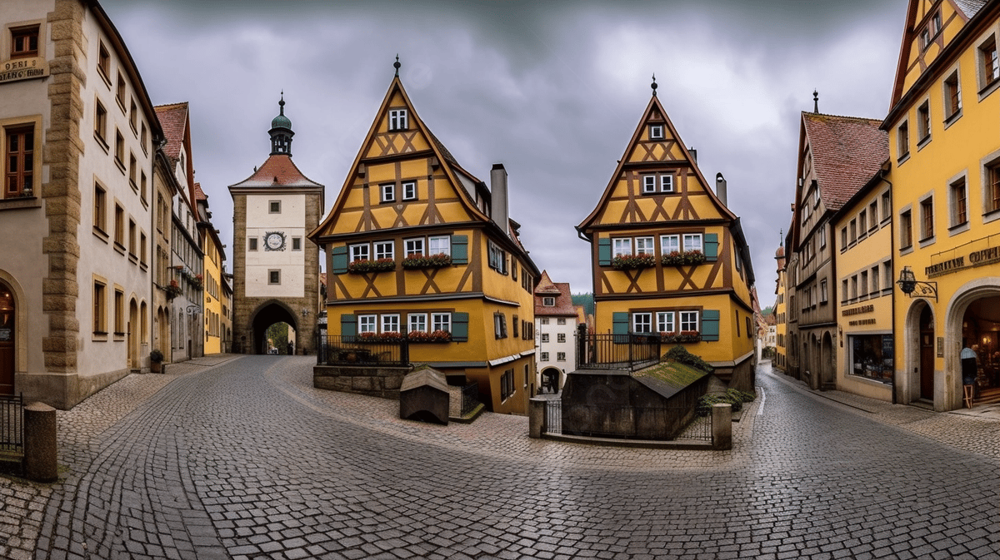

Jerman adalah sebuah negara yang terletak di Eropa Tengah dan merupakan salah satu negara terbesar dan paling berpengaruh di Uni Eropa.
Jerman adalah negara yang berpengaruh secara politik, ekonomi, dan budaya di Eropa dan di seluruh dunia. Ia memainkan peran kunci dalam integrasi Eropa dan tetap menjadi salah satu kekuatan utama di Uni Eropa.
Kastel Neuschwanstein
Kastel Neuschwanstein (Schloss Neuschwanstein) adalah sebuah kastil yang terletak di Bavaria, Jerman. Kastil ini terkenal karena keindahan arsitekturnya dan keterlibatannya dalam cerita-cerita dongeng.
Berikut adalah sejarah singkat Kastel Neuschwanstein:
Pembangunan oleh Raja Ludwig II : Kastil Neuschwanstein dibangun atas perintah Raja Ludwig II dari Bayern (Bavaria) pada abad ke-19. Raja Ludwig, yang sering disebut sebagai "Raja Impian," memulai konstruksi kastil ini pada tahun 1869.
Inspirasi Dongeng : Kastil ini dirancang dengan arsitektur yang sangat mengesankan dan terinspirasi oleh cerita-cerita dongeng, terutama cerita karya sastrawan Jerman, Richard Wagner. Kastil ini juga terinspirasi oleh kastil-kastil abad pertengahan.
Sebagai Tempat Pribadi : Awalnya, Kastel Neuschwanstein direncanakan sebagai tempat tinggal pribadi untuk Raja Ludwig II. Kastil ini dirancang dengan berbagai fitur yang mengagumkan, seperti tangga spiral yang megah dan ruang-ruang yang dihiasi dengan cerita-cerita epik.
Kematian Raja Ludwig II : Sayangnya, Raja Ludwig II meninggal pada tahun 1886 sebelum konstruksi kastil selesai. Kastil ini dibuka untuk umum sebagai museum hanya beberapa minggu setelah kematiannya.
Wisata Populer : Kastel Neuschwanstein menjadi salah satu tujuan wisata terpopuler di Jerman dan menarik jutaan pengunjung dari seluruh dunia setiap tahun. Pemandangan kastil yang megah dengan latar belakang Pegunungan Alpen sangat menakjubkan.
Film dan Inspirasi : Kastil Neuschwanstein telah muncul dalam berbagai film dan menjadi inspirasi bagi berbagai kastil fiksi, termasuk Kastil Cinderella di Walt Disney World.
Situs Warisan Dunia UNESCO : Bersama dengan kastil-kastil lainnya yang dibangun oleh Raja Ludwig II, Kastel Neuschwanstein telah diakui sebagai Situs Warisan Dunia UNESCO.
Kastel Neuschwanstein adalah salah satu kastil yang paling indah dan terkenal di dunia, dengan arsitektur yang mengesankan dan kisah yang menarik di baliknya. Ini adalah salah satu daya tarik wisata yang paling menakjubkan di Jerman.
Berlin Wall Memorial
Berlin Wall Memorial (Gedenkstätte Berliner Mauer) adalah situs bersejarah yang mengenang Tembok Berlin, yang memisahkan Berlin Timur dan Berlin Barat selama Perang Dingin.
Berikut adalah sejarah singkat Berlin Wall Memorial:
Pembangunan Tembok Berlin : Pada tanggal 13 Agustus 1961, pemerintah Jerman Timur (Jerman Demokratik) memulai pembangunan Tembok Berlin yang bertujuan untuk mencegah warga Jerman Timur melarikan diri ke Jerman Barat. Tembok ini menjadi simbol Perang Dingin dan pemisahan Jerman.
Fungsi Pembatas : Tembok Berlin adalah sebuah dinding yang tinggi dan kuat yang dikelilingi oleh tembok beton dan kawat berduri. Ini berfungsi sebagai penghalang fisik yang melindungi Jerman Timur dari dunia Barat. Ribuan orang mencoba melarikan diri, dan banyak yang tewas dalam upaya tersebut.
Penghapusan Tembok : Pada tahun 1989, setelah protes massal dan perubahan politik di Eropa Timur, tembok ini akhirnya dibuka pada tanggal 9 November 1989. Ini menjadi awal dari penyatuan kembali Jerman Timur dan Jerman Barat.
Pembentukan Memorial : Setelah penyatuan kembali Jerman, beberapa bagian dari Tembok Berlin dijaga sebagai pengingat sejarah yang penting. Pada tahun 1998, Berlin Wall Memorial dibentuk untuk mengenang korban-korban dan untuk memahami sejarah Tembok Berlin dan dampaknya.
Komponen Memorial : Memorial ini mencakup berbagai komponen, termasuk sisa-sisa Tembok Berlin yang masih ada, dokumentasi visual, pameran dalam ruangan, dan area peringatan yang menghormati korban yang tewas dalam upaya melarikan diri.
Pengalaman Pengunjung : Berlin Wall Memorial memberikan pengunjung wawasan yang mendalam tentang kehidupan di Berlin pada masa Perang Dingin, penderitaan yang dialami oleh warga yang terpisah dari keluarga mereka, dan upaya-upaya berani untuk melarikan diri.
Pentingnya Sejarah : Berlin Wall Memorial adalah salah satu situs yang penting dalam memahami sejarah Perang Dingin dan pengaruhnya terhadap Jerman dan Eropa. Ini juga mengingatkan kita akan pentingnya perdamaian dan persatuan.
Berlin Wall Memorial adalah tempat yang penting untuk mengenang dan memahami sejarah penting Tembok Berlin dan perjuangan yang dialami oleh warga Jerman Timur dan Barat selama Perang Dingin.
Kota Tua Rothenburg ob der Tauber

Kota Tua Rothenburg ob der Tauber adalah sebuah kota tua yang cantik dan terletak di negara bagian Bavaria, Jerman.
Berikut adalah sejarah singkat Kota Tua Rothenburg ob der Tauber:
Asal Mula : Kota ini memiliki sejarah yang panjang, dengan asal usul yang dapat dilacak kembali ke abad ke-13. Rothenburg ob der Tauber adalah bagian dari Kekaisaran Romawi Suci pada masa itu.
Arsitektur Abad Pertengahan : Kota Tua Rothenburg ob der Tauber adalah contoh yang sangat baik dari kota tua abad pertengahan yang terawat dengan baik. Bangunan-bangunan abad pertengahan dengan atap yang tumpul, jendela-jendela kayu, dan jalan-jalan berbatu adalah ciri khasnya.
Pertahanan Kota : Kota ini memiliki sistem dinding pertahanan yang kuat yang dibangun pada abad ke-14 dan abad ke-15. Tembok kota ini memiliki menara pengawas dan gerbang masuk yang megah yang masih terjaga dengan baik.
Peran Sejarah : Selama Abad Pertengahan, Rothenburg ob der Tauber adalah pusat perdagangan yang penting dan anggota Liga Frankonika, sebuah persekutuan kota-kota untuk melindungi rute perdagangan mereka. Namun, dengan berjalannya waktu, peran perdagangan kota ini berkurang.
Pemeliharaan dan Pariwisata : Pada akhir abad ke-19, kota ini mulai menarik perhatian pelukis dan seniman yang tertarik pada keindahan dan keautentikan arsitekturnya. Hari ini, Rothenburg ob der Tauber adalah salah satu tujuan wisata paling populer di Jerman, menarik wisatawan dari seluruh dunia.
Natal di Rothenburg : Kota ini juga dikenal sebagai "Kota Natal" karena perayaan Natal yang megah yang diadakan setiap tahun, menjadikannya destinasi yang populer selama musim liburan.
Kota Tua Rothenburg ob der Tauber adalah contoh yang sangat baik dari kota tua Eropa yang indah dan memiliki warisan sejarah yang kaya. Pengunjung dapat menjelajahi jalan-jalan berbatu yang indah, mengagumi arsitektur abad pertengahan, dan menikmati atmosfer yang tenang dan romantis di kota ini.